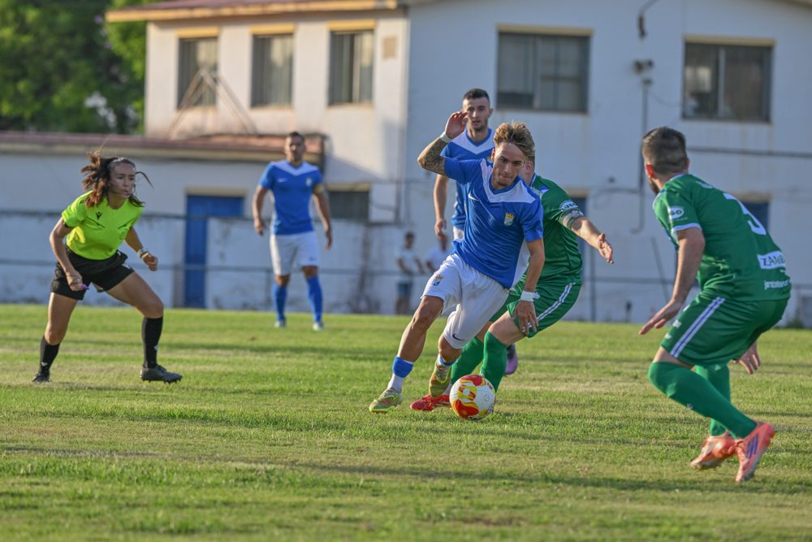
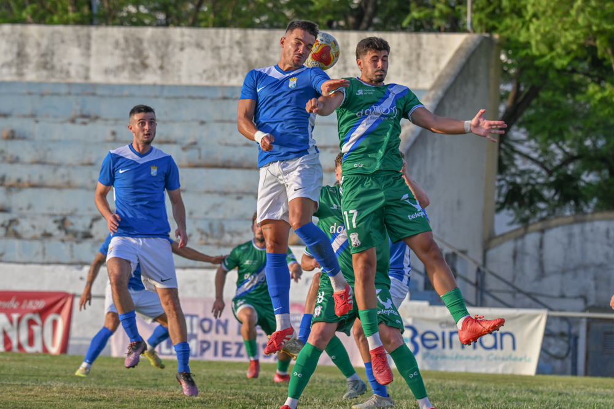
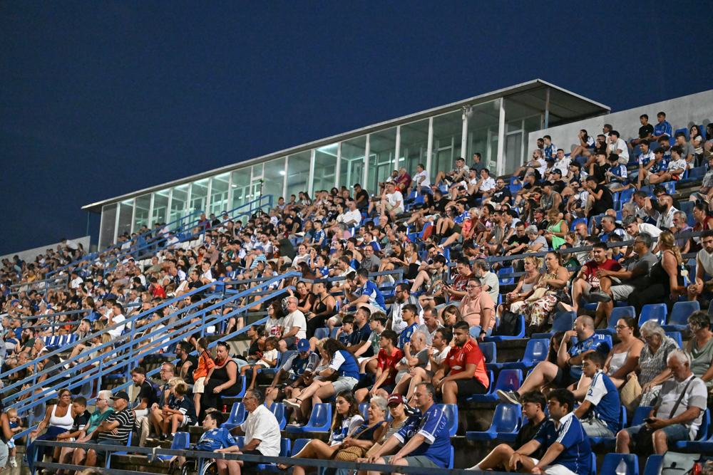

Xerez CD hit seven at the Pedro Garrido Trophy in their first pre-season match

Photo: Diario XerecistaXerez CD thrashed Jerez Industrial 0-7 in the sixth edition of the Pedro Garrido Trophy, the first friendly of the pre-season under Xavi Molist, with goals from Rober Sánchez, Mario Peregrina, Isuskiza, Óscar Lorenzo, Rubén Mesa, Óscar Ganfornina and Isma.
The blue-and-whites cruised to victory in the sixth edition of the Pedro Garrido Trophy, a tournament organised by Jerez Industrial, in the pre-season opener for Xavi Molist's side. The coach, with several notable absentees in his squad, shared out the playing time among all his players by fielding two different line-ups and tried out two tactical systems: an attacking 3-5-2 for the first 45 minutes and a more conventional 4-2-3-1 after the break.
To start the match, Molist picked Marcos Alconchel in goal and a back three in the attacking phase made up of Guille Campos, Josete and Manu Rosado, with Jaime Fernández and Chacartegui covering the flanks. Raúl López acted as the team's playmaker, supported by Bittor Isuskiza in the build-up; Zequi and Mario Peregrina operated between the lines, while Rubén Sánchez led the attack.
A lightning double in the opening minutes
Barely after kick-off, Xerez went ahead thanks to a goal from academy player Rober Sánchez, who finished unchallenged from a cross from the left by Chacartegui. The second goal came shortly after from Mario Peregrina, who headed in a cross from Rober following a move started by Zequi. The Sanlúcar-born player himself came close to scoring the third with a shot from the edge of the area, but Portela prevented the goal with a great diving save that sent the ball out for a corner.

Photo: Diario XerecistaWith Xerez CD in complete control, Molist kept urging his players to move quickly, circulate the ball fast and favour two-touch play against an opponent who were already feeling the strain of their first week of summer training. Portela shone again, this time blocking a point-blank effort from Josete with his face after a corner, in another clear chance to extend the lead on that hot evening of the first of August.
After the drinks break came the third blue-and-white goal, scored by Bittor Isuskiza. Mario Peregrina combined in midfield to break through the opposition lines and laid the ball off to Zequi, who, after flicking the ball over a defender, set it up on a plate for the attacking midfielder to tap into an empty net for 0-3, a goal that drew a big ovation.
A second half with a new-look side
For the second half, Molist made wholesale changes: Fali came into the centre of defence alongside Manu Galán, with David Lachica and Óscar Gallardo on the flanks; Isma and Óscar Ganfornina took charge of midfield; a line of three made up of Zelu, Óscar Lorenzo and Jaime López, with Rubén Mesa as the attacking focal point.
Straight after the restart, Óscar Lorenzo caught the home goalkeeper out with a cross-shot that went into the net. Shortly after, Rubén Mesa pounced on a rebound from the goalkeeper to score the fifth goal of the night. Jaime López wasted the chance to make it six after a great move by Zelu, sending the ball wide.
The sixth goal finally came from academy player Óscar Ganfornina, with a long-range shot that gave the home keeper no chance. David Lachica also had his opportunity after a pass from Zelu, although the Industrial goalkeeper responded with a good save. As the minutes went by the pace of the game dropped considerably, although Xerez rounded off the scoreline with a seventh goal from the penalty spot, converted by Isma, after a foul on Ahmed, a player on trial with the team.
Match facts
Jerez Industrial: Carlos Portela, Manu Jiménez, Daviti, Joselito, Juanjo, Chicho, Manu Rojas, Benítez, Salvi, Mochón and Juanjo Chamorro. Also played: Andrés, Luis, Dani Castro, Pedro, Alberto, Germán, Jorge, Raúl, Javi Romero, Saúl and Beato.
Xerez CD: Marcos Alconchel, Manu Rosado, Guille Campos, Josete, Chacartegui, Raúl López, Isuskiza (Ahmed, 35'), Jaime Fernández, Zequi Díaz, Mario Peregrina and Rober Sánchez. After the restart came on: Carlos Pantoja, Óscar Gallardo, Fali, Manu Galán, David Lachica, Isma, Óscar Ganfornina, Óscar Lorenzo, Zelu, Jaime López and Rubén Mesa.
Goals: 0-1 (1') Rober Sánchez. 0-2 (6') Mario Peregrina. 0-3 (34') Isuskiza. 0-4 (48') Óscar Lorenzo. 0-5 (49') Rubén Mesa. 0-6 (63') Óscar Ganfornina. 0-7 (84') Isma, penalty.

Photo: Diario XerecistaReferee: Patricia Luna Varo.
Notes: Match in the sixth edition of the Pedro Garrido Trophy, held at the stadium of the same name, whose pitch was in poor condition. There was a good turnout in the stands. Before kick-off a minute's silence was held in memory of Borja Ferrer.
🇪🇸 Leer en español ← Back to home